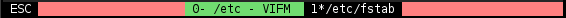

I was postponing learning how to use terminal multiplexers for a long time until one day had to test integration with tmux, which required learning it. So I was using tmux since then and always thinking whether I could do better by using GNU Screen instead. After all, most of GNU applications turn out to be quite versatile and extremely useful, so why GNU Screen wouldn't have these properties? This is especially reasonable question if one recalls that tmux was modeled after GNU Screen.
There is enough basic tutorials and configuration dumps of .screenrc out there
on the Internet, so I won't create one more. Instead, I'll explain what wasn't
immediately clear to me, mention wrong facts about GNU Screen (some of which are
not really "wrong", they just outdated by now) and provide .screenrc with
comments (well, yeah, there is a configuration dump at the end).
Terminology difficulties
Let's take Vim's terminology as a good example and then proceed to tmux and GNU Screen. Vim has the following entities when it comes to files and how they appear on the screen:
- buffer -- holds the file
- window -- displays one of buffers
- tab -- displays one or more windows
tmux provides nice example of how one should never name things (it still gives me hard time remembering the naming):
- window -- this is a "tab" in Vim and pretty much any other application
- pane -- this is a "window" in Vim (very intuitive to name different things with very similar words, isn't it?..)
Naming is not strong part of GNU Screen as well, but there is a logic behind most it:
- window -- this is like a "buffer" in Vim (strange naming, but it gets better)
- region -- this is like a "window" in Vim (makes sense, "region" suits well)
- layout -- a "tab" in Vim (near perfect match, "tab" is just a layout container)
At least both applications could agree on calling sessions "sessions"...
Layout
Continuing to use Vim as a base for comparison. This time tmux generally behaves closer to what I would expect, but GNU Screen is getting there if one uses buffer commands in Vim.
Creating new "window" in tmux creates a tab where you can place multiple
"panes", closing an application running in a "pane" removes that part of the
screen. It's like combination of :tabnew and :q in Vim.
GNU Screen puts regions above their content and one can easily loop through all
applications in each of the regions. If application is closed, GNU Screen puts
next available "window" where just closed application used to be. Something
similar happens on :bdelete in Vim. There is even a thing called "empty
region", which is like empty buffer in Vim you get after typing :bdelete too
many times. It's this "empty region" you see by default right after a split.
Splits
Many people still think that GNU Screen doesn't provide vertical splits, which
is not true since Version 4.2.0 (17/04/2014), which added -v option to split
command.
Tabs
Other people (or the same) might not know that one can have multiple independent layouts at the same time without running GNU Screen in GNU Screen (yes, people did this and had to type prefix key multiple times). Also available since 4.2.0 version.
Result of differences
In tmux I usually ended up having too many open "windows" (which are tabs, in case you got lost), GNU Screen seems to improve my workflow by limiting amount of different layouts only to those I actually need, which should be a good thing and should teach me to be more careful regarding closing application and corresponding region. Although, this might be very specific to my workflow, as I tend to overuse tabs even if I don't really need them.
Command syntax
I heard that GNU Screen had horrible configuration syntax, but I don't see it
being much different from the one tmux has. Honestly, I still don't know why
there are set-option, set-window-option, set-option -g and
set-window-option -g in tmux and when one should use one or another. So I
find configuration in GNU Screen more straightforward and obvious, although it
differs from :set in Vim, but this allows additional options and extended
syntax, which is handy.
Command grouping
One notable difference is how one can run multiple commands. In tmux commands
can be separated by \; (two characters), GNU Screen requires using eval
command which interprets each argument as a separate command (it seems to have
some differences compared to normal shell expansion, note that).
Other
Status line
Global one is called "hardstatus" and there is also a "caption" (per region). Looks like it can't be put at the top of the window, unlike tmux. On the other hand, it's not an issue here as editing command-line happens above the "caption" and it's not as confusing as in tmux (although highlight is a bit strange at least with my setup). Another good thing about it is that completion matches are displayed similar to Vim with 'wildmenu' option turned on.
(UPD 2016-06-29) Found out that version 4.3.0 added firstline value to
hardstatus command. So having status line at the top is possible! (Not sure
which version I had installed before.) Command-line editing in this case still
happens at the bottom, but unfortunately completion doesn't show up then (not
a tragedy actually as it turned out, one doesn't configure terminal multiplexer
in live mode usually)..
Not sure how to display list of layouts on status line, don't see escape codes for this.
Colors
Don't see a way to specify colors from 256 palette, only standard 16. tmux has
colourXXX for this.
Boundaries
Not able to set custom characters for boundaries or different boundary for current region.
Text copying
Can't pipe copy buffer to a command in GNU Screen, but one can write it to a file and then do something with it.
Also can't find history of copied text (prefix+= by default in tmux), but there are registers.
On searches with / or ? previous search is automatically cleared for you, which is great, never understood why it's not the case in tmux (it's probably one of a few applications with such strange implementation).
Directory of a split
Don't see a nice way of using working directory of current process in newly created split.
Command classes
I'm not aware of similar feature in tmux, but GNU Screen allows creation of new modes, although they are named "classes" here.
There are two parts for this. First, commands are defined in some command class:
bind -c <class> <key> <command>
Second, some key is used to enter this class:
bind <key> command -c <class>
An example of resize mode is provided below.
Note that each command leaves the mode, so to stay in it one needs to "re-enter" it again:
bind -c <class> <key> eval "<command>" "command -c <class>"
Actually, it is not exactly a mode, but a way to define custom prefix characters and put some key bindings in separates namespaces. Yet, it's powerful enough to emulate modes on some level.
Configuration
Precaution for colors you see below: mine are changed for xterm via
~/.xresources.
Not sure if it's the same on all systems, but at least on Slackware there are a
bunch of settings in sample .screenrc that correct termcapinfo and alike,
won't repeat them here (they present in actual configuration file).
General configuration
# don't display lengthy license and version information on startup
startup_message off
# don't log new windows to utmp (who and such won't work, which is fine)
deflogin off
# automatically detach on terminal hangup (so that one can attach again and
# continue working)
autodetach on
# ignore case on searches in copy-mode
ignorecase on
# assume UTF-8 encoding
defutf8 on
# use 256-color palette
term screen-256color
# disable flow control as it conflicts with Ctrl-S prefix
defflow off
# erase background with current bg color
defbce on
# remove delay after pressing escape key inside screen
maptimeout 0
# start screen with a new layout (none by default)
layout new initial
# wait up to three seconds before hiding last message (default is 5 seconds)
msgwait 3
# enable alternative screen
altscreen on
# use big scrollback buffer
defscrollback 5000
# suppress trailing blank lines when scrolling up text into the history buffer
compacthist on
Interface
# set color of borders and command-line (cyan background, black foreground)
rendition so = ck
Titles
# status line with current window highlighted
hardstatus alwayslastline '%{Rk}%?%{dd}%E ESC %{Rk}%: %?%=%?%{gk} %-Lw%?%{kW} %n*%f%t%?(%u)%? %{= gk}%?%+Lw %{Rk}%:%{Rk} %?%='
This requires additional configuration for bash:
# set screen title
if [ -z "$TMUX" ]; then
# when in shell, to current path
case $TERM in
screen*)
PS1='\[\033k\w\033\\\]'$PS1
;;
*) ;;
esac
# otherwise to command name
PROMPT_COMMAND="echo -ne '\033k\033\0134';$PROMPT_COMMAND"
fi
This way title is:
- set to current directory (
\win$PS1above) if we're in a shell - set to command name (e.g.
vim) after we run a command from shell
Hardline looks like this:

From left to right:
ESC-- signals about pressed prefix key (disappears afterwards)- light red -- regular background
- light green -- background of inactive window
- black background -- active window
(UPD 2016-06-29) Version 4.3.0 added x and X specifiers that provide
name of current command (with/without arguments), which can simplify the setup
above if you're ready to drop displaying of current directory in a shell.
Bindings
Basic
# change prefix key to Ctrl-S
escape "^S^S"
# vim-like navigation between windows
bind h focus left
bind j focus down
bind k focus up
bind l focus right
# reload configuration file (note that this creates extra layout due to
# `layout new initial` command)
bind r source ~/.screenrc
# create new window with a shell prompt
bind C screen
# split horizontally creating new shell prompt
bind - eval split 'focus down' screen
# split vertically creating new shell prompt
bind | eval 'split -v' 'focus right' screen
Layouts
# create new layout with a shell prompt
bind c eval 'layout new' screen
# switch between layouts with Alt+Number
bindkey "^[0" layout select 0
bindkey "^[1" layout select 1
bindkey "^[2" layout select 2
bindkey "^[3" layout select 3
bindkey "^[4" layout select 4
bindkey "^[5" layout select 5
bindkey "^[6" layout select 6
bindkey "^[7" layout select 7
bindkey "^[8" layout select 8
bindkey "^[9" layout select 9
# switch to next layout
bind n layout next
# switch to previous layout
bind p layout prev
# create new empty layout
bind N layout new
# remove current layout
bind q layout remove
Copy-mode
# v - start selection
# y - start line-wise selection
# J - scroll down
# K - scroll up
markkeys "^M=v:y=V:^E=J:^Y=K"
# > - copy selection to system clipboard
bindkey -m > eval "stuff ' '" writebuf "exec sh -c 'xsel < /tmp/screen-exchange'"
Resize-mode
# put screen into resize mode
bind R command -c rs
# use hjkl keys to resize regions
bind -c rsz h eval "resize -h -5" "command -c rsz"
bind -c rsz j eval "resize -v -5" "command -c rsz"
bind -c rsz k eval "resize -v +5" "command -c rsz"
bind -c rsz l eval "resize -h +5" "command -c rsz"
# use HJKL keys to move between regions
bind -c rsz H eval "focus left" "command -c rsz"
bind -c rsz J eval "focus down" "command -c rsz"
bind -c rsz K eval "focus up" "command -c rsz"
bind -c rsz L eval "focus right" "command -c rsz"
Conclusion
Again it started as testing of integration, but I'm using GNU Screen more than a week now and probably will stick with it. There are some things worth improving (I get strange 10 second delay before closing a shell which spawned at least one graphical application and got used to opening new split in working directory of current process), but general impression is good. The upshot is: try it yourself rather than reading posts about how superior tmux is, the latter is really not that different from GNU Screen.